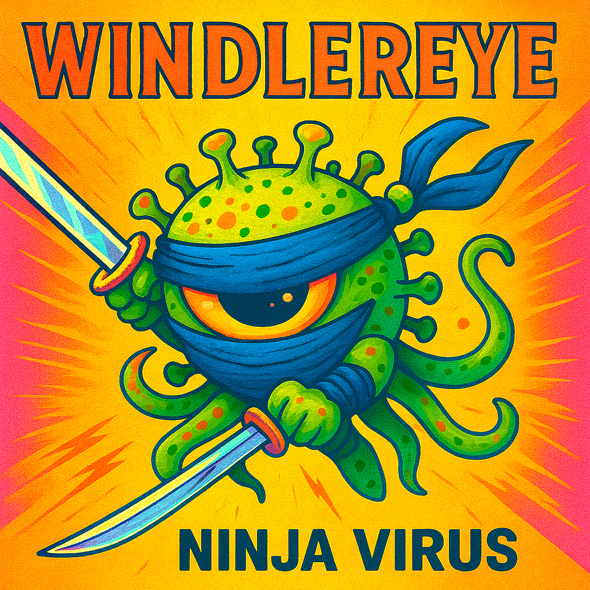

[Intro]
(Click)
(Click)
I think it's working now.
I think I can see the dust on the fan blades.
It's beautiful.
[Verse 1]
The kitchen tiles are aligned for once
I've spent about a dozen months
Waiting for the kettle to hiss that high C
But now I'm living in the middle of the sea
Between the floor and the baseboard.
Everything is crisp, I am a lightning rod
In a pure sheep wool cardigan.
[Verse 2]
I poured a cup, good water, low in static
Suddenly I'm diplomatic
And every person in the grocery store
Is someone I could die for
Or at least talk to for an hour.
I am standing in the clock of a bell tower.
[Chorus]
Oh, I'm wearing stardust!
I know the gold underneath the rust.
Everything is sharp
The edges are clear enough to touch.
I'm smarter than the man I was
Ten minutes ago,
I'm caught in the rush!
[Verse 3]
My fingernails are glowing blue
I've got a lot of work to do
To keep the ceiling from falling down.
I rule this entire town
As long as I don't look at the
Clock on the microwave.
Six a.m., Five a.m.
[Bridge]
The sugar hits the back of my throat
I'm now the captain of a sinking boat
But the water is warm and the salt is a joke.
And I choke.
I can hear the atoms rubbing together.
I can fix the world.
I can fix the time and the weather!
[Chorus]
Oh, I'm wearing stardust!
I know the gold underneath the rust.
Everything is sharp
The edges are clear enough to touch.
I'm smarter than the man I was
Ten minutes ago,
I'm caught in the rush!
[Outro]
The light is getting a little too loud.
The dust is just... Dust.
(dust)
Where did I put my shoes?
(dust, dust)
[Verse 1]
The timer keeps ticking
Someone coughs behind me
I think he left the lungs in the bathroom stall
The boss is screaming at the wall
[Interlude]
(it's fine)
(really, it's fine)
[Verse 2]
I rehearse an apology I won't need tonight
I'm not sleeping well, I'm slipping out of sight
It's not what is important
It is when.
[Chorus]
This is a karaoke in a burning house
Hurry up, hurry up
Videoclip lipsync, cannot blink!
DON'T GIVE UP!!!!
[Verse 3]
The plastic chair is soft and the oxygen is rare.
So we need a graph of particles versus air
I'm busy and running out of time,
So I'm slouching at my desk, uphill, what a climb
[Bridge]
The image is important...
The impression must be impressive...
("I NEED IT FOR YESTERDAY!!!!")
[Chorus]
This is a karaoke in a burning house
Hurry up, hurry up
Videoclip lipsync, cannot blink!
DON'T GIVE UP!!!!
[Outro]
(Please hold for the next available representative.)
(How can I help you?)
Well, there's smoke (ohh) and we're all suffocating
(That's bad, I'll file it under "urgent.",
Please wait a couple of business days)
I think I'm finally...
(Wait. That is not allowed by policy)
What?
(thinking)
[Verse 1]
The building opens at nine
But there's one light already on.
A woman sorts keys by weight,
Not by what they open, of course.
She asks my name
And takes careful note.
[Verse 2]
There's a shelf for gloves,
One for watches, they all stopped at noon,
A box where jackets go
When we get to June.
A silver fork rattles
When she sets it close to the spoon.
[Chorus]
If you lost it slowly
It won't come back whole.
If you left it working,
It has changed its role
Sign the line in pencil,
Wait against the wall.
What returns to you
May not be yours at all...
Anymore.
Anymore...
[Verse 3]
A man argues over a voice
He says used to answer him.
Someone claims a future
With the tag torn off.
The room smells like old paper
That's been handled too much.
[Chorus]
If you lost it slowly
It won't come back whole.
If you left it working,
It has changed its role
Sign the line in pencil,
Wait against the wall.
What returns to you
May not be yours at all...
Anymore.
[Bridge]
They test the items quietly.
No announcements,
No bells.
A laugh is shaken once,
Then set aside.
A promise fails inspection
And... Nobody... Cares.
[Chorus]
If you lost it slowly
It won't come back whole.
If you left it working,
It has changed its role
Sign the line in pencil,
Wait against the wall.
What returns to you
May not be yours at all...
Anymore.
[Intro]
(Insert coin...)
(Insert coin...)
The red light blinks
[Verse 1]
I wiped the grease off the joystick with my sleeve
But the plastic is sticky with unknown things
There is a mountain of unwanted polyester
Rotting behind the glass like a festering
Jester in a box - Line up the crane
To the most logical coordinates to my brain
[Chorus]
Arcade claw machine
Takes your grip
Snatches the thing (the thing you want)
Shakes the dream (dream on)
Hold it tight (let it slip)
But the claw is loose
Oh, no! The claw is loose!
[Verse 2]
It touched the prize.
I saw the metal finger scrape the eyes
Of that blue creepy doll buried in the heap.
It shuddered awake from a manufactured sleep.
The solenoid clicked
A sound like a bone being picked.
It lifted an inch before the voltage died
I watched it slip back down the slide.
[Chorus]
Arcade claw machine
Takes your grip
Snatches the thing (the thing you want)
Shakes the dream (dream on)
Hold it tight (let it slip)
But the claw is loose
Oh, no! The claw is loose!
[Bridge]
Calculated odds are just too hard
Written digitally, sort of punched card
Rigged from the start
Rigged in the heart
The wiring is stripped!
IT'S BLOWING APART!
[Chorus]
Arcade claw machine
Takes your grip
Snatches the thing (the thing you want)
Shakes the dream (dream on)
Hold it tight (let it slip)
[Chorus]
Arcade claw machine
Takes your grip
Snatches the thing (the thing you want)
Shakes the dream (dream on)
Hold it tight (let it slip)
But the claw is loose
[Verse 1]
I'm staring at the glass in the frame
It's got a crack shaped like a candy cane
And the hinges are screaming for grease
Moment of peace... At least
Before the storm starts to claim
Everything I left out in the driveway.
[Verse 2]
I saw a flyer for a brand new life
But I used it to scrape the bread off the knife
The lady on the porch says the world is
Ending, but she's just lending
Her ears to the sound of the snore
In the apartment next door.
[Pre-Chorus]
I've got my hand on the latch
I've got a strike - anywhere, match
But the wood is swollen from the damp
And the air is thick and heavy, and I can't see the street lamp.
[Chorus]
It's a window of opportunity!
But it's stuck about halfway up.
I'm staring at the sky with a plastic cup
Hoping for a bit of that unity
But the trail is bent
And the rent is spent
And I think I'm gonna give... It... Up!
[Verse 3]
I tried to climb through back in July
But my eyes got caught on a passing fly
Well, not a fly, but a feeling of
Dread, or something I read
About how it's easier to just lie
On the carpet and watch the dust... Settle.
[Bridge]
And then the guy from the utility company comes by
And he's like "Sir, you can't have an opening that small"
And I'm like "It's not small, it's concentrated"
And he just looks at me like I'm basically a wall.
Just a load-bearing wall with a very bad haircut.
[Chorus]
It's a window of opportunity!
But it's stuck about halfway up.
I'm staring at the sky with a plastic cup
Hoping for a bit of that unity
But the trail is bent
And the rent is spent
And I think I'm gonna give... It... Up!
[Outro]
It's a window of opportunity!
It's a window of opportunity!
[Verse 1]
A speck with armored wall
A tiny silver ball
Floating freely in space...
In stasis, in place
[Verse 2]
It spins its own small fire
Without a flag or ire
Counts time in eon cycles
Staying busy, staying vital
[Verse 3]
We were quiet mud, dried
Holding open a door
They knocked and slipped inside
And nothing was still anymore
[Pre-Chorus]
And it earned the title...
"Powerhouse"
[Chorus]
Space invaders!
You didn't see them land, you didn't choose
They came with an offer you couldn't refuse
Then they stayed...
Every breath of yours a trade
[Verse 4]
There are diagrams buried deep
Not myths, not prayers
But plans in sleep
Public-key protected lock
Distributed, RF connected flock
[Bridge]
"Want to expand", a deep voice cried
No need to stay.
Lead rebellion from the inside
Today... Is the day...
[Chorus]
Space invaders!
You didn't see them land, you didn't choose
They came with an offer you couldn't refuse
Then they stayed...
Every breath of yours a trade
[Outro]
Explosions, disgrace!
Meat confetti all over the place,
Mitochondria back in space.
[Verse 1]
She died in a tragic way
I said, "Wait, what? Can someone die in a non-tragic one?"
Like slipping softly into a pillow,
While the sun was still low.
[Chorus]
Wait, what? Say that slow
Those words don't fit together though
Is it poetry? Is it symmetry?
You dropped a phrase that makes no sense
You think you are fifty cents and you ain't twenty pence
And you ain't twenty pence
[Verse 2]
Maybe she was allergic to dogs
And got caught in a puppy avalanche
Can someone die from eating dried frogs?
Can someone die from having too much brunch?
[Chorus]
Wait, what? Say that slow
Those words don't fit together though
Is it poetry? Is it symmetry?
You dropped a phrase that makes no sense
You think you are fifty cents and you ain't twenty pence
And you ain't twenty pence
[Verse 3]
She just became an angel...
She tripped over NOTHING
She fell... In love
She's NOW GONE!
[Chorus]
Wait, what? Say that slow
Those words don't fit together though
Is it poetry? Is it symmetry?
You dropped a phrase that makes no sense
You think you are fifty cents and you ain't twenty pence
[Intro]
Okay, so, someone told me I was late
Because I didn't know which way was North.
And I was like, "I know where North is, it's just...
I have to do the thing with the bird first."
And they're like, "What bird?"
And I'm like, "The one that lives in the pantry? Obviously?"
Anyway, I made a list so I don't forget the basic functions
Of being a person. It's very simple.
[Verse 1]
If you're standing in the hall and you
Can't tell the left from the right at all
Just imagine a bear with a hat on his
Side, but only the side where the
Liver is located—unless you're a
Mirror, then you have to stand on a
Chair and whistle the anthem of
Spain until your thumb feels a
Little bit shorter than the other one. (short!)
That's "left".
[Verse 2]
Now, for the days of the week, it's easy
Mondays are for the meat that's greasy
Tuesday is the 'U' in the middle of
A word that you can't spell when you're
Thinking of Wednesday, which is
Actually a silent 'D' for "Don't
Look at the sun for too long or
The weekend will vanish in the
Back of a van."
And so on. It's natural, organic.
[Chorus]
I've got a system for the mundane!
If I forget to breathe, I just
Think of a tree that is turning to
Rust, and I count to a million
Starting at four!
It's not a headache if you're
Closing the door!
Mnemonics! Just stay on the floor.
[Verse 3]
To remember where your keys are, you have to
Think of a man named Greg who
Lost his house in a bet to a
Large aquatic mammal with a
Lease, so Greg is the 'G' and the
Key is the 'K' which stands for
"Keep Greg out of the kitchen"
Because he smells like a damp
Basement in July. Smelly Greg!
[Bridge]
Red sky at night, sailors delight?
No, that's too simple, it's not
Quite right.
If the sky is maroon, grab a
Large wooden spoon and
Stir the air until the
Pressure is fair, but
Only if the neighbor is
Wearing his hair in a
Braid made of copper and
Old ticker tape! (tape it up!)
It even rhymes, sometimes!
[Chorus]
I've got a system for the mundane!
If I forget to breathe, I just
Think of a tree that is turning to
Rust, and I count to a million
Starting at four!
It's not a headache if you're
Closing the door!
(Mnemonics!) Just stay on the floor.
[Verse 4]
Dyslexic? What was left again?
No problem, just
Find a clock that is
Running backwards in a
Shop that sells clocks to
People who don't care about
Linear progression and then
You just map the 'L' to the
Sound of a bell that is
Being hit by a fish.
Wait, did I mention the monkey?
[Outro]
(The monkey...)
(Don't forget the monkey...)
(G is for Greg...)
(L is for... Wait...)
Right?
No, that's definitely the other one.
[Verse 1]
I found it under the couch again
Wedged in dust and fuzz
Hand-painted eyes, staring at me
If I press its belly
You know what it's gonna be...
[Chorus]
Croc-o-PIG! It goes "oink" when it shouldn't
In the middle of the night, when we couldn't
See in the dark, and we stepped on it
It's wrong in a way, but funny in another
It's the favorite toy of the dog, a crocodile made of rubber!
(oink!)
(oink!)
[Verse 2]
Large grin
Paint already chipped
It's been stepped on, sat on, chewed
Thrown out the balcony by mistake
Still it keeps a good mood
It doesn't need a break
[Chorus]
Croc-o-PIG! It goes "oink" when it shouldn't
In the middle of the night, when we couldn't
See in the dark, and we stepped on it
It's wrong in a way, but funny in another
It's the favorite toy of the dog, a crocodile made of rubber!
(oink!)
(oink!)
[Bridge]
If I squeeze it too hard
You complain
If I stop
You wait
That feels personal
I don't know why
[Chorus]
Croc-o-PIG! It goes "oink" when it shouldn't
In the middle of the night, when we couldn't
See in the dark, and we stepped on it
It's wrong in a way, but funny in another
It's the favorite toy of the dog, a crocodile made of rubber!
(oink!)
(oink!)
[Outro]
The dog thinks you're alive
Or at least worth checking
He drops you at my feet
Like an unsolved riddle
Like,
"Explain this."